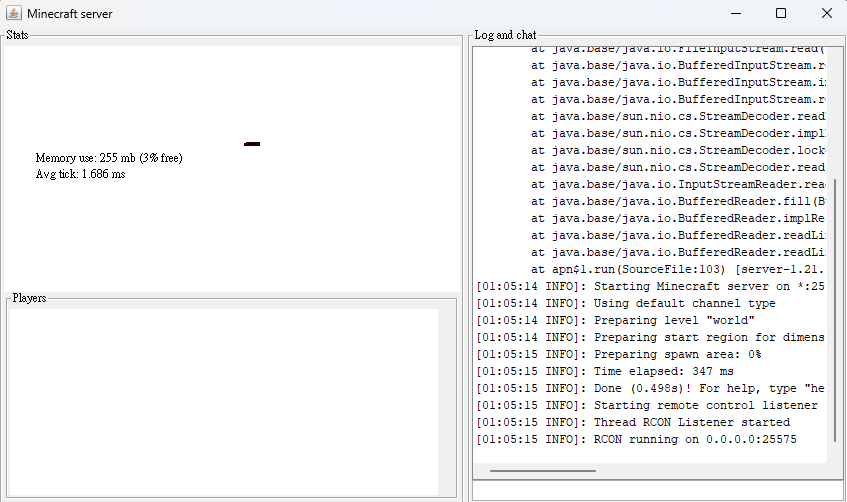

專案目標
本專案旨在研究強化學習（Reinforcement Learning, RL）在 Minecraft 中的可行性，並探索如何在這個虛擬環境中有效地應用 RL 技術。
動機
我對使用 Minecraft 來訓練強化學習智能體有濃厚的興趣。早在我還沒有接觸機器學習之前，就曾聽說微軟收購 Minecraft 是為了用其作為 AI 訓練的環境。然而，這些年來似乎很少有關於 Minecraft 和機器學習的相關消息，這讓我產生了疑問。
我認為，Minecraft 本身就是一個很好的訓練環境。它具有開放式的世界設定，並且包含了基本的人物動作、物理規則等特徵，這些都使其成為一個簡化版的真實環境。此外，Minecraft 的像素化設計應該使得圖像處理和特徵提取變得相對簡單。然而，為什麼在實際應用中我們卻很少看到相關的研究進展呢？
抱著這個疑問，我上網搜尋了相關資料，發現確實在 2018 年到 2020 年間有一場名為 MineRL 的競賽，目的是為了測試誰能最快完成 Minecraft 中的任務，如從零開始挖掘鑽石等。OpenAI 也是這項競賽的主辦方之一，他們當時的結論是，僅使用純強化學習來完成這些任務幾乎是不可能的。因此，他們提出了一種新的算法 VPT (Visual Prompt Tuning)。
簡單來說，VPT 是利用大量來自 YouTube 的 Minecraft 影片，先進行監督式學習，然後再透過強化學習進行微調。這個方法顯著降低了訓練的難度，並且在比賽中取得了第一名的成績。然而，看完這些資料後，我心中還有許多疑問，比如：
- 為什麼純強化學習的效率如此低？
- 如果目標簡單一些，強化學習能否有效訓練？
- 是不是有其他方法可以讓強化學習在這樣的環境中更快收斂？
這些問題在網路上並沒有找到具體的答案（或者可能是我沒有找到），因此，如果我想得到這些答案，必須親自去實驗並進行研究。我相信，即使最終的結果不盡如人意，我也可以從中學到許多寶貴的知識。
環境創建
1. 測試地圖與訓練空間設計
我首先在 Minecraft 中設計了一個封閉的訓練房間，這樣可以有效地屏蔽外界的干擾，減少過多不必要的視覺信息，使智能體能專注於學習如何跳到正確的位置。房間中的設計相對簡單，以利於智能體專注於訓練目標。

2. 成功方塊（Success Block）
我選擇使用淺藍色方塊作為成功的指標。如果智能體或玩家踩到這個方塊，計分板上的「成功次數」會自動增加 1，並且玩家會被立即傳送回出生點，這個出生點位於地圖中央的黑色區域。
3. 失敗方塊（Failure Block）
灰色方塊則代表失敗。如果玩家或智能體踩到這個方塊，計分板上的「死亡次數」會增加 1，並結束當次訓練，隨後將玩家或智能體傳送回出生點，準備開始下一次訓練。
3. 資料讀取
接下來，我需要讓程式能夠讀取 Minecraft 中記分板上的數據。為了實現這一目標，我在 Minecraft 中架設了一個伺服器，並使用mcrcon 然而，記分板顯示的內容不僅僅包含我需要的數據，還有一些多餘的訊息。為了精準地擷取到「成功次數」和「失敗次數」這些關鍵數據，我使用了 正則表達式（Regular Expression） 來過濾和提取所需的資料。

到這裡，Minecraft 環境的基本設置就完成了。雖然程式碼看起來不多，但對我來說，這是一個不小的挑戰，因為這是我第一次嘗試在 Minecraft 中進行程式設計。
智能體與行動設計
行動設計
這次的任務我讓智能體有十三種行動選擇，包括：
- 前後左右（WASD）
- 跳躍與蹲下
- 方向基本移動
- 複合鍵（跑跳等）
PPO 演算法
此次實驗我選擇使用 近端策略優化（Proximal Policy Optimization, PPO） 演算法。PPO 的優點在於穩定性高與效率高，能夠逐步學習並避免策略過大改變。
PPO 演算法的概念介紹
近端策略優化（Proximal Policy Optimization, PPO）是一種強化學習演算法，用於幫助智能體學習如何在不確定的環境中做出最佳決策。它的主要目標是平衡策略更新的速度與穩定性，讓智能體能夠在學習過程中穩定提升，而不會因為一次更新過大而導致表現崩潰。
PPO 的核心概念
- 策略更新比率：PPO 透過比較新策略和舊策略在同一狀態下做出相同行動的機率，來決定是否需要對策略進行調整。如果新策略的改變過大，它會進行限制，避免這樣的情況發生。
- 小幅度改變：PPO 將策略的改變控制在一個較小的範圍內，這樣智能體可以逐步學習，不會因為大幅度的改變導致學習失控。
PPO 的優點
- 穩定性高：智能體不會因為一次錯誤的大幅度策略更新而導致學習效果崩潰，這使得學習過程更平穩。
- 效率高：PPO 會充分利用已經收集到的數據，進行多次的策略更新，使學習更加高效。
為什麼選擇 PPO？
- 運算量小：每次只進行小幅度更新，學習過程更加穩定。
- 資料利用率高：PPO 可以透過多次迭代更新策略，提高資料的使用效率。
引入卷積神經網路（CNN）
我使用 CNN 處理視覺數據，因為 Minecraft 是一個三維環境，智能體需要基於視覺輸入做出行動決策。這些視覺輸入包含了各種重要信息，如地形形狀、方塊顏色、障礙物的位置等。直接使用這些像素數據進行強化學習會非常低效且難以處理，而 CNN 可以幫助自動化提取這些視覺數據的關鍵特徵，使 PPO 能夠基於這些高層次特徵進行更高效的學習。
CNN 輸入流程
- 使用 mss 截圖:利用 mss 函式庫截取螢幕畫面，預設為主螢幕。
- 轉為 numpy 陣列:將截取的畫面轉換為 numpy 陣列格式，以方便後續處理。
- 調整圖片大小:將圖片縮放至 84x84 像素的大小，以減少訓練量。
獎勵設計
獎勵設計方面，我設計了簡單的規則：
- 踩到正確的方塊獲得 10 分
- 踩到錯誤方塊扣 5 分
- 若無法達成目標，給予 0.1 分微小獎勵
我目前在尋找更好的獎勵設計方式，以改善這個獎勵函數
映像深刻的 bug
在設計機器學習模型時，我經常遇到模型大小不匹配的問題，這讓我感到困惑，不知道問題是出在我的設計還是其他方面。通常稍作調整後可以解決，但有一次，我已經設計好模型並開始訓練，卻在運行了 18 分鐘後系統突然報錯，提示模型大小有誤。
當時，我花了很長時間查找問題的原因，始終無法找到具體的問題所在。後來，在一次測試過程中，我打開了電腦的工作管理員，這才意外發現原來是我的內存已經被佔滿，導致模型無法繼續運行，從而產生錯誤。
這次經歷讓我學到了一個重要的教訓：有時候，當我在解決程式中的錯誤時，問題的原因可能並不是眼前所看到的，而是需要從更多角度去思考，才能找到問題的真正所在。
遇到的困難與潛在問題
目前這個計劃仍處於未完成的階段，主要原因是我的設備性能不足。現在使用的筆記型電腦經常在運行過程中出現卡頓或無法順利運行的情況，我懷疑這可能與內存釋放不當有關，導致內存佔用過多。此外，由於 Minecraft 的特性，我無法像其他強化學習環境那樣，同時啟動數十個實例進行並行訓練，這也讓模型的訓練效率大大降低。
儘管面臨這些挑戰，我並不打算停止研究。我正在積極尋找解決這些問題的方法，並希望在不久的將來克服這些技術障礙。同時，我也認識到自己在技術上還有許多不足之處，以及許多可以改進的地方，這將是我未來努力的方向。
潛在問題
我目前想到的一個潛在問題是，訓練地圖的設計過於單一，缺乏隨機性。這可能會導致智能體學到的不是基於對正確顏色的判斷來作出跳躍，而是簡單地認為只要在特定情況下「前跳」就能解決問題。
如果智能體僅在重複的環境中學會了一個簡單的模式，那麼當它面對更加複雜或多變的場景時，可能就無法做出正確的反應。這樣的行為會影響智能體的泛化能力，特別是在面對不同地圖或更多變的環境時，它可能表現不佳。
通常，解決這個問題的辦法是引入更多的隨機性，讓智能體在不同的情境下進行學習。然而，這也會大幅增加訓練的難度。在目前硬體條件的限制下，我決定暫時放棄解決這個問題 ，先看模型有沒有正確的學習。
未來展望
我對這個專案的未來有著豐富的想像，相信它在 Minecraft 上的發展潛力遠不止於此。除了跑酷挑戰，還有許多其他任務可以應用強化學習技術來實現。例如，智能體可以進行 PvE（玩家對抗環境）的挑戰，在不同的生存場景中與怪物對抗；或者是 PvP（玩家對抗玩家）模式，讓智能體學習如何應對其他玩家的攻擊。
我還設想創建兩個 AI，讓它們彼此對抗，從而學習如何更有效地進行進攻與防守。除此之外，未來的方向也可以探索多模態模型的應用，讓智能體不僅依靠畫面作為輸入，還能分析遊戲中的聲音等其他感知信息。這樣的多模態學習可能會發現一些意外的關聯，進一步提升智能體的決策能力。
這些都是我未來想要嘗試的方向，並且我相信這些探索將為強化學習在 Minecraft 中的應用開拓更廣泛的可能性。
附錄
我目前並沒有將專案整理完整，而是只將程式碼的部分上傳，日後再做修改 敬請見諒
程式碼 Githab 連結：